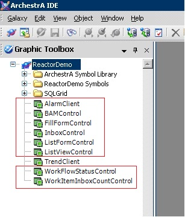
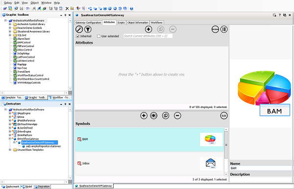
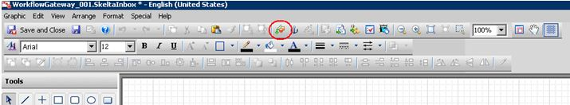

No
You can use workflow features from Inside InTouch.
The Import Client Control(s) dialog box appears.
C:\Program Files\ArchestrA\Workflow\InTouch\ArchestrA.InTouch.SkeltaControls.dll
The imported graphic object appears in the Graphic Toolbox in ArchestrA IDE as shown in the following image:

If the same version of the control exists, then you will be prompted to rename the existing controls.

The Graphic Editor appears.

The ArchestrA Object browser appears.
Note:
- The control must be placed on the Workflow Gateway object.
- In case the control is placed on a user-defined object, then ensure:
-- The object has an attribute called ConnectionString.
--- The value of this ConnectionString attribute is same as that of the ConnectionString attribute (hidden) of the Workflow Gateway object.